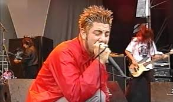
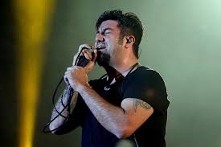

Chino Moreno (nacido Camilo Wong Moreno, 20 de junio de 1973) es el carismático vocalista y líder de la banda de metal alternativo Deftones. Con más de tres décadas en la industria musical, Chino es reconocido por su inigualable capacidad vocal, que va desde poderosos gritos hasta suaves melodías. Además de su trabajo con Deftones, ha explorado sonidos más atmosféricos y electrónicos en proyectos como ††† (Crosses) y Team Sleep. Su versatilidad artística y energía en el escenario lo han convertido en una de las figuras más influyentes del rock moderno.